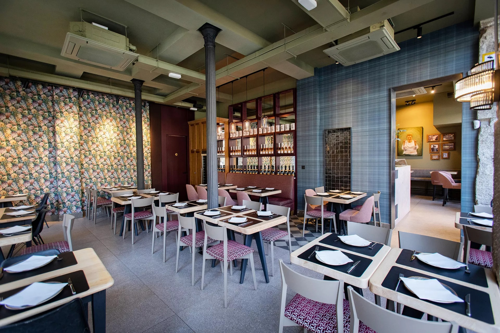
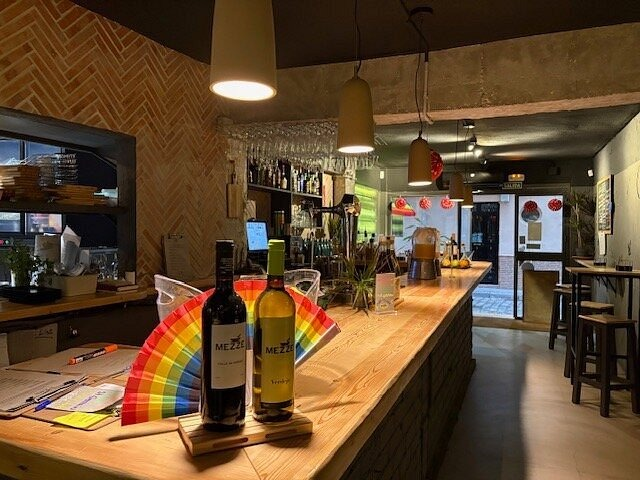
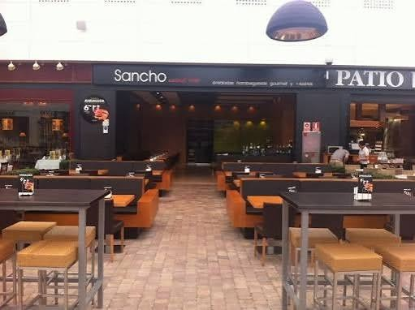
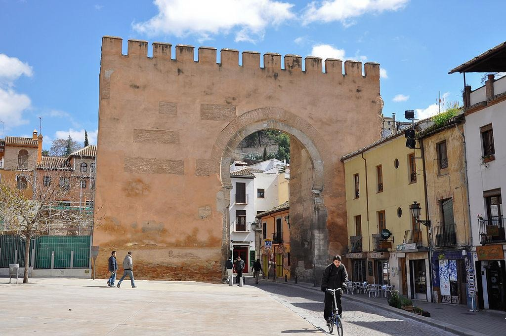
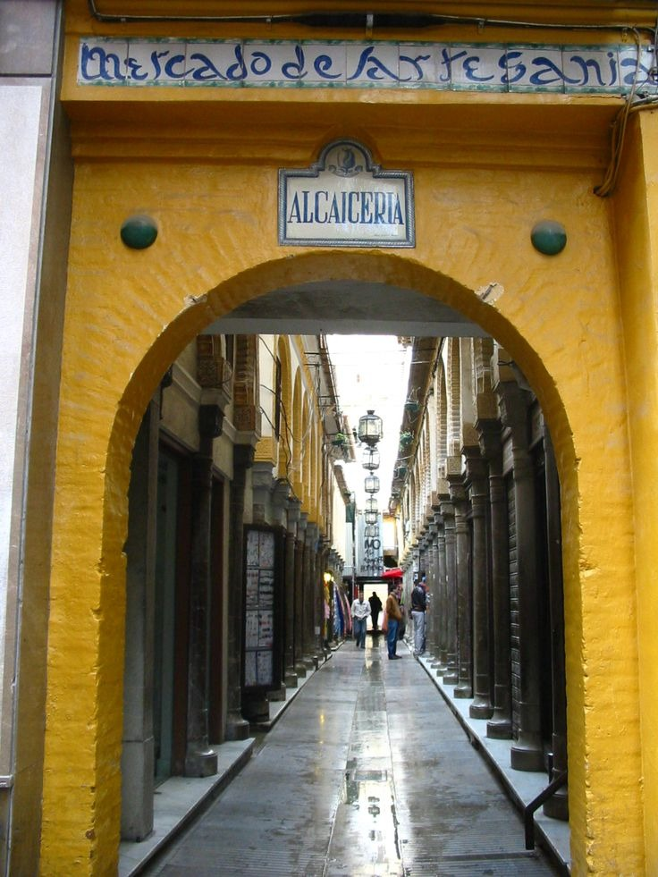
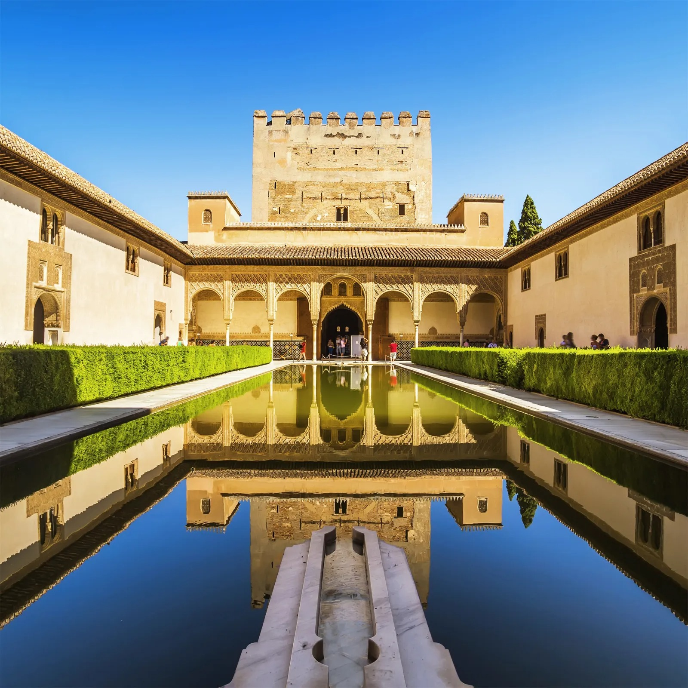
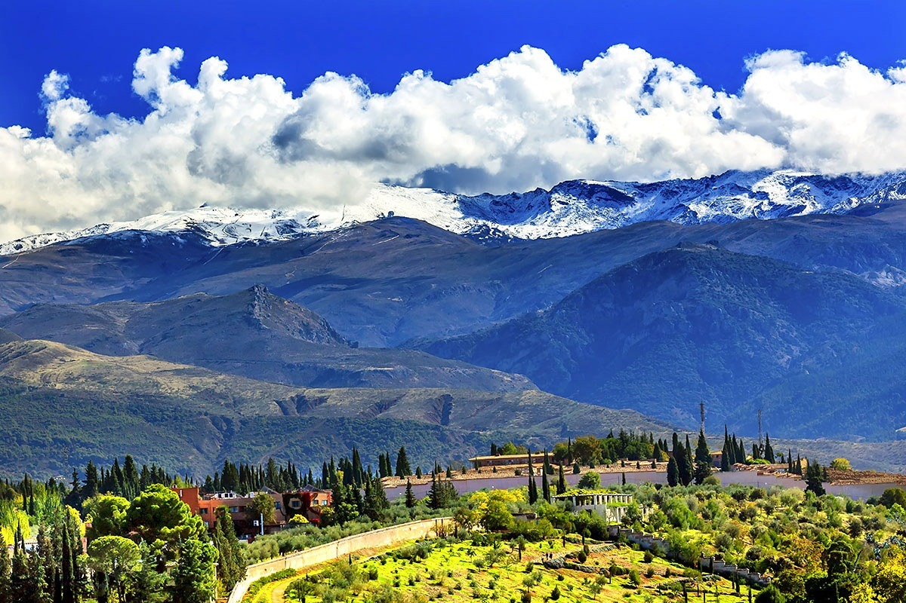

Restaurants
My favorite restaurants in Granada

La Nonna Carmela
Buzzy Italian spot serving croquettes, wood-fired pizzas, and pastas; loved for its lively terrace, warm service, and gluten-free options
Address:
Pl. de Bib-Rambla, 6
What I like about it:
I love the variety of pasta dishes and pizzas they offer, all gluten-free and no cross-contamination, which we all coeliac people appreate so much

Mezze
Cozy vegan/vegetarian gem blending Mediterranean flavors with global twists; known for empanadas, curated drinks, and a special, attentive vibe
Address:
C. Laurel de las Tablas, 16
What I like about it:
This Mediterranean restaurant offers a variety of dishes from curries to empanada argentina, all really testy, vegan and lots of gluten-free options

Sancho Casual Burger
Modern, central burger joint with a big menu, spicy patties, and crispy Cajun & sweet potato fries; fast, friendly service in a small stylish space
Address:
Centro - Mesones, Pl. de Cauchiles, 4
What I like about it:
Amazingly tasty burgers, chips and nachos with cheese and salsa and at least 8 of thier burgers can be gluten-free adapted
Gallery
My photos of Granada




